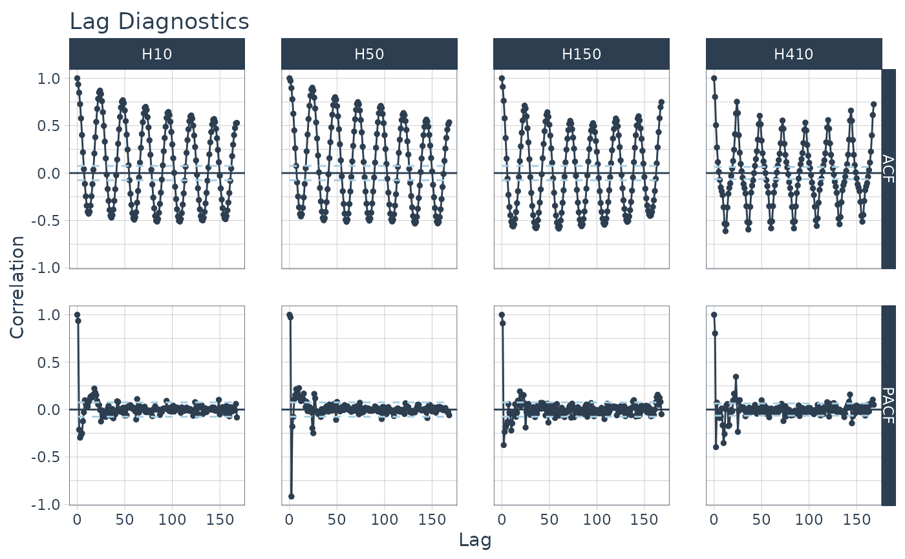
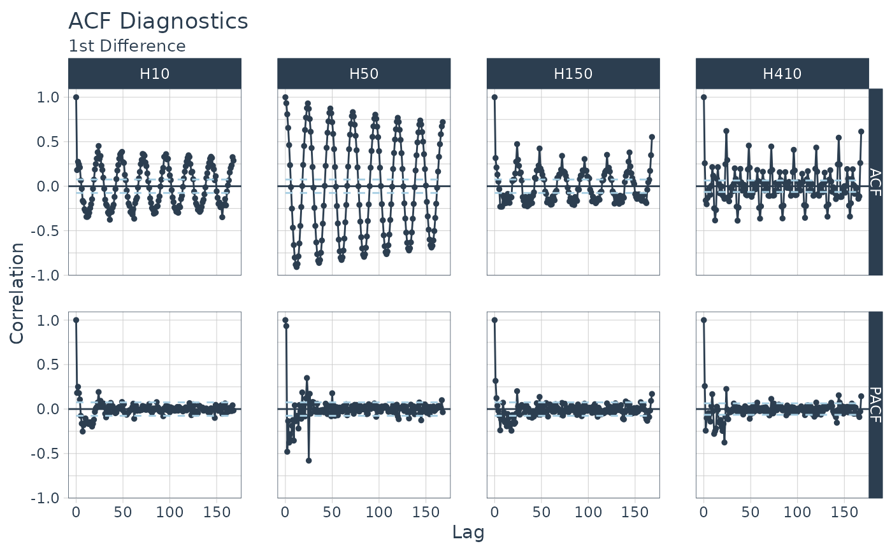
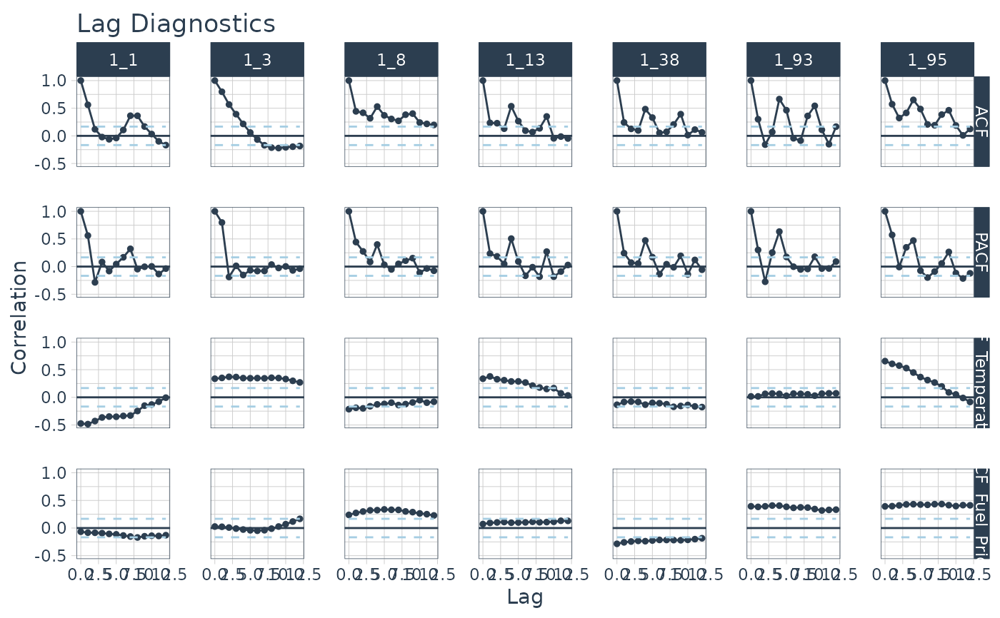

Visualize the ACF, PACF, and CCFs for One or More Time Series
Source:R/plot-acf_diagnostics.R
plot_acf_diagnostics.RdReturns the ACF and PACF of a target and
optionally CCF's of one or more lagged predictors in interactive plotly plots. Scales
to multiple time series with group_by().
Usage
plot_acf_diagnostics(
.data,
.date_var,
.value,
.ccf_vars = NULL,
.lags = 1000,
.show_ccf_vars_only = FALSE,
.show_white_noise_bars = TRUE,
.facet_ncol = 1,
.facet_scales = "fixed",
.line_color = "#2c3e50",
.line_size = 0.5,
.line_alpha = 1,
.point_color = "#2c3e50",
.point_size = 1,
.point_alpha = 1,
.x_intercept = NULL,
.x_intercept_color = "#E31A1C",
.hline_color = "#2c3e50",
.white_noise_line_type = 2,
.white_noise_line_color = "#A6CEE3",
.title = "Lag Diagnostics",
.x_lab = "Lag",
.y_lab = "Correlation",
.interactive = TRUE,
.plotly_slider = FALSE
)Arguments
- .data
A data frame or tibble with numeric features (values) in descending chronological order
- .date_var
A column containing either date or date-time values
- .value
A numeric column with a value to have ACF and PACF calculations performed.
- .ccf_vars
Additional features to perform Lag Cross Correlations (CCFs) versus the
.value. Useful for evaluating external lagged regressors.- .lags
A sequence of one or more lags to evaluate.
- .show_ccf_vars_only
Hides the ACF and PACF plots so you can focus on only CCFs.
- .show_white_noise_bars
Shows the white noise significance bounds.
- .facet_ncol
Facets: Number of facet columns. Has no effect if using
grouped_df.- .facet_scales
Facets: Options include "fixed", "free", "free_y", "free_x"
- .line_color
Line color. Use keyword: "scale_color" to change the color by the facet.
- .line_size
Line size (linewidth)
- .line_alpha
Line opacity. Adjust the transparency of the line. Range: (0, 1)
- .point_color
Point color. Use keyword: "scale_color" to change the color by the facet.
- .point_size
Point size
- .point_alpha
Opacity. Adjust the transparency of the points. Range: (0, 1)
- .x_intercept
Numeric lag. Adds a vertical line.
- .x_intercept_color
Color for the x-intercept line.
- .hline_color
Color for the y-intercept = 0 line.
- .white_noise_line_type
Line type for white noise bars. Set to 2 for "dashed" by default.
- .white_noise_line_color
Line color for white noise bars. Set to
tidyquant::palette_light()"steel blue" by default.- .title
Title for the plot
- .x_lab
X-axis label for the plot
- .y_lab
Y-axis label for the plot
- .interactive
Returns either a static (
ggplot2) visualization or an interactive (plotly) visualization- .plotly_slider
If TRUE, returns a plotly x-axis range slider.
Details
Simplified ACF, PACF, & CCF
We are often interested in all 3 of these functions. Why not get all 3+ at once? Now you can.
ACF - Autocorrelation between a target variable and lagged versions of itself
PACF - Partial Autocorrelation removes the dependence of lags on other lags highlighting key seasonalities.
CCF - Shows how lagged predictors can be used for prediction of a target variable.
Lag Specification
Lags (.lags) can either be specified as:
A time-based phrase indicating a duraction (e.g.
2 months)A maximum lag (e.g.
.lags = 28)A sequence of lags (e.g.
.lags = 7:28)
Scales to Multiple Time Series with Groups
The plot_acf_diagnostics() works with grouped_df's, meaning you can
group your time series by one or more categorical columns with dplyr::group_by()
and then apply plot_acf_diagnostics() to return group-wise lag diagnostics.
Special Note on Groups
Unlike other plotting utilities, the .facet_vars arguments is NOT included.
Use dplyr::group_by() for processing multiple time series groups.
Calculating the White Noise Significance Bars
The formula for the significance bars is +2/sqrt(T) and -2/sqrt(T) where T is the length of the
time series. For a white noise time series, 95% of the data points should fall
within this range. Those that don't may be significant autocorrelations.
See also
Visualizing ACF, PACF, & CCF:
plot_acf_diagnostics()Visualizing Seasonality:
plot_seasonal_diagnostics()Visualizing Time Series:
plot_time_series()
Examples
library(dplyr)
library(ggplot2)
# Apply Transformations
# - Differencing transformation to identify ARIMA & SARIMA Orders
m4_hourly %>%
group_by(id) %>%
plot_acf_diagnostics(
date, value, # ACF & PACF
.lags = "7 days", # 7-Days of hourly lags
.interactive = FALSE
)

# Apply Transformations
# - Differencing transformation to identify ARIMA & SARIMA Orders
m4_hourly %>%
group_by(id) %>%
plot_acf_diagnostics(
date,
diff_vec(value, lag = 1), # Difference the value column
.lags = 0:(24*7), # 7-Days of hourly lags
.interactive = FALSE
) +
ggtitle("ACF Diagnostics", subtitle = "1st Difference")
#> diff_vec(): Initial values: 513
#> diff_vec(): Initial values: 39325
#> diff_vec(): Initial values: 45
#> diff_vec(): Initial values: 153

# CCFs Too!
walmart_sales_weekly %>%
select(id, Date, Weekly_Sales, Temperature, Fuel_Price) %>%
group_by(id) %>%
plot_acf_diagnostics(
Date, Weekly_Sales, # ACF & PACF
.ccf_vars = c(Temperature, Fuel_Price), # CCFs
.lags = "3 months", # 3 months of weekly lags
.interactive = FALSE
)
